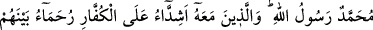
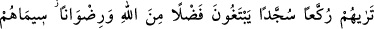
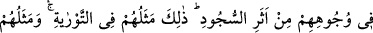
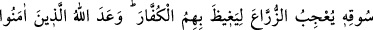
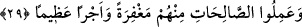

29. Muhammed Allah’ın elçisidir. Beraberinde bulunanlar da kâfirlere karşı çetin,
kendi aralarında merhametlidirler. Onları rükûya varırken, secde ederken
görürsün. Allah’tan lütuf ve rıza isterler. Onların nişanları yüzlerindeki secde
izidir. Bu, onların Tevrat’taki vasıflarıdır. İncil’deki vasıfları da şöyledir: Onlar
filizini yarıp çıkarmış, gittikçe onu kuvvetlendirerek kalınlaşmış, gövdesi üzerine
dikilmiş bir ekine benzerler ki bu, ekicilerin de hoşuna gider. Allah böylece onları
çoğaltıp kuvvetlendirmekle kâfirleri öfkelendirir. Allah onlardan inanıp iyi işler
yapanlara mağfiret ve büyük mükâfat vaad etmiştir.
“İşte bu, hidayet ve hak din İslâm ile gönderilmiş peygamber, Allah’ın resûlü
Muhammed (s.a.)’dir” anlamına gelir.
Telkîhu’l-ezhân isimli eserde şöyle denilir: Cenâb-ı Allah, Hz. Muhammed (s.a.)’e,
tüm mahlûkâtı onun için yarattığını bildirmiştir. Buna göre âlemi onun zuhuru için
yaratmış, âlem o Nebiyy-i Ekrem’e tecellî mekânı olmuştur. Nitekim Hz. Peygamber
(s.a.) şöyle buyurmuştur: “İnsanların ve cinlerin isyankârları hariç göklerle yeryüzü
arasında bulunan her şey, benim Allah’ın resûlü olduğumu bilir.”
Şeyh Üftâde (k.s.) şöyle der: Allah Teâlâ tecellî ettiği vakit tüm ruhları yarattı. Önce
Nebimiz (s.a.)’in ruhunu, daha sonra diğer ruhları yarattı ve tevhidi telkin edip “Lâ
ilâhe illallah” buyurdu. Akabinde de onu (s.a.) “Muhammed Rasûlullah” buyurarak taltif
etti ve nübüvveti kendisine o vakit ikrâm etti. Bu sebeple Peygamber Efendimiz (s.a.)
“Âdem (a.s.) su ile çamur arasında iken ben peygamberdim” buyurmuştur.[144]
Bu hadis-i şerifin mânâsı şudur: Hz. Peygamber (s.a.) daha o vakit bilfiil peygamberdi
ve peygamberliğini bilmekte idi. Ondan başka hiçbir peygamber maddî bedeni ile
gönderilip nübüvvetin şartları tamamlanana kadar bilfiil peygamber değildi ve
peygamber olacağını da bilmemekteydi. Bu anlamda gerek kendisinden önce gelen
peygamberler, gerekse sonra gelen evliyaullah Hz. Mustafa (s.a.)’in nâibi ve halifesidir.
Çünkü onun nurunun varlığı ve peygamberliğin ona verilmesi hepsinden öncedir.
Hz. Peygamber (s.a.) şöyle buyurmuştur: “Ben Allah’ın nurundanım, mü’minler de
benim nurumun feyzindendir.”[145] İlk ve yüce cins odur, diğerleri ona bağlı ve ondan
sonradır. Ayrıca Peygamber Efendimiz (s.a.) şöyle buyurmuştur: “Ben yaratılış